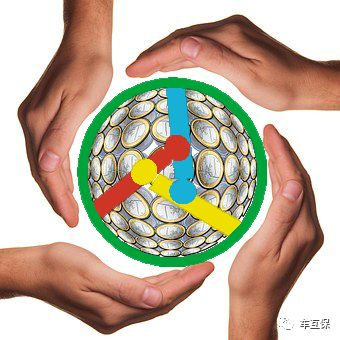
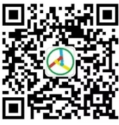

传统经济与共享经济

不管是传统经济还是共享经济都会遵循经济学的基本原理，任何违背经济学基本原理的行为都会让这种行为付出经济的代价。 共享经济与传统经济有什么不同？我们不妨以现在网络上最火的网约车来举个栗子进行一下探讨。人类的经济活动五花八门，乘坐出租车就是人类如万花筒一般绚丽多彩的经济活动中的一种。出租车是为了方便人们出行而提供的一种出行服务，他与租车是有区别的，租车是提供一种出借出行工具的服务。当然，天下没有免费的午餐，乘坐出租车也是要花钱的。那么他的价格怎么确定了？在早些时候，出租车司机根据估计的路途距离来收取车费。但到20世纪初期，有人发明了可自动测量车辆实际行进距离的计程器。计程器的出现还有一个故事：1907年初春的一个夜晚，富家子弟亚伦同他的女友去纽约百老汇看歌剧。散场时，他去叫马车，问车夫要多少钱。虽然离剧场只有半里路远，车夫竟然漫天要价，多出平时10倍的车钱。亚伦感到太离谱，就与车夫争执起来，结果被车夫打倒在地。亚伦伤好后，为报复马车夫，就设想利用汽车来挤跨马车。后来他请了一个修理钟表的朋友设计了一个计程仪表，于是就有了我们现在俗称“的士”这种打表计费的出租车。
科学技术的进步对市场行为起到了促进作用。在网络技术应用还未成熟的时代出租车获得消费者（或者消费者获得出租车服务)的途径根据其市场行为特点主要是：在车站、机场等固定场所等候、出租车巡游揽客、还可利用电话向出租车调度台进行预约，我们把这些获客方式统称为巡游获客。随着网络技术应用的成熟，于是有的公司就发展了网络获客的方式，我们把这种获客方式称为网约获客。可见科学技术的进步又一次对市场行为起到了促进作用。不管是巡游获客还是网约获客都属于出租车经营行业，从市场需求的角度来分析他们提供的服务产品属于替代品。那么从市场供给的角度分析仅提供巡游获客方式的出租车公司将会向网约获客方式进行技术升级，而提供网约获客的出租车公司获客方式将向下兼容。如果有些公司不提供出行人的服务，而是提供出行人的信息服务（也就是获客服务，俗称“兔子”）。那么从市场供给的角度分析他们的产品关系将变为互补品的关系。那么从市场经济的发展趋势，有可能为了消除外部性对经济的影响，企业之间将会进行整合或兼并，最后整个市场结构将由完全竞争市场和完全垄断市场逐渐发展成垄断竞争市场和寡头垄断市场,这就是传统经济发展的趋势。
花开两朵，各表一枝，说完了传统经济，现在来讲讲共享经济。
，大家都知道小型载客汽车泛指小型载人的汽车，即定员2--9人的小型客车，下面我们就用一般有5个座位的小型客车来举个栗子。大家搭乘出租车除了司机外，只有4个座位可以进行消费。假设你一个人独自乘坐出租车从A地到B地，需要100元车费。你为了节约消费成本约了另外三个人一起拼车，那么每个人消费就变成了25元。所以在传统社会，朋友之间拼车、包括邻里之间互借东西，都是一种形式的共享。当然这种共享也并不只有乘客进行，有时出租车司机为了提高他的收入，也会将剩余的座位进行二次出售以谋求更高的利润。甚至当生意惨淡时为了和其他交通工具竞争，出租车司机将从A地到B地需要的100元车费按4个座位进行分摊，按每个座位30元进行收取，然后再将其中5元拿出来交给为他招揽乘客（俗称“兔子”）的人为其进行揽客。根据经济学的理论我们知道商品价格的变化会产生两种效应，即收入效应和替代效应。当一种商品变得相对便宜时，对它的购买量总会上升。还有就是私家车（这里并非指“黑车”），当一位私家车主从A地到B地时为了节约他的用车成本，可以将他空着的座位拿出来和他人进行共享。这些都会促成共享交易平台的产生。而随着网络信息技术的发展和进步使得一个由第三方创建的以信息技术为基础的市场平台能够为供给与需求方进行共享交易。所以共享经济也是为了达到帕累托最优，而进行的帕累托改进。
pictures
- 
- 